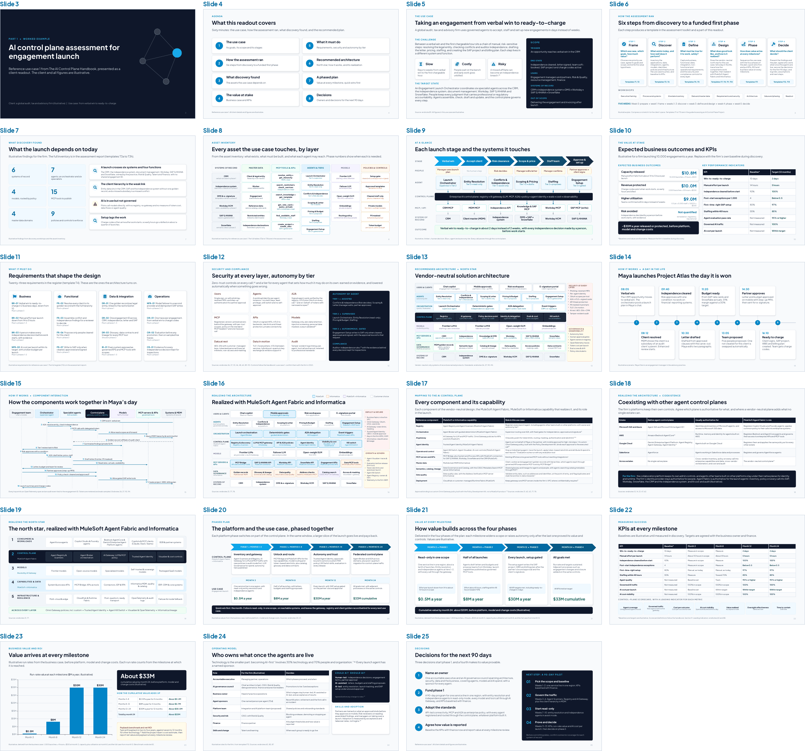

Section 9
Presenting use case 1 to the client
The readout is a 60-minute meeting with the executive sponsor and the leadership team, held to agree the four decisions that start the first 90 days. Part 1 of the client deck (slides 3 to 25) is the finished readout for use case 1, and its speaker notes carry the full talk track. Rehearse with it before your first readout, then build your own deck following Part 2, which has the same slides with prompts to replace.

The storyline
The readout follows the eight parts on the agenda slide, in the order of the six assessment steps: the use case, how the assessment ran, what discovery found, the value at stake, what the solution must do, the recommended architecture, the phased plan and the decisions. The table gives the slides, presenter, timing and templates for each part, and the one message it has to land.
| Part | Slides | Presenter | Minutes | Templates | The message to land |
|---|---|---|---|---|---|
| Opening | 4 | Engagement lead | 3 | The goal of the meeting is to agree a plan and four decisions for the next 90 days. | |
| 1. The use case | 5 | Engagement lead | 3 | T1 | Engagement launch can go from verbal win to ready-to-charge in about two business days instead of ten, with people keeping every accountable decision. |
| 2. How the assessment ran | 6 | Lead architect | 2 | The design and the numbers come from the firm’s own people, documents and data, captured over five weeks and eight workshops in thirteen templates. | |
| 3. What discovery found | 7–9 | Lead architect | 5 | T1, T3 | A launch crosses six systems and four functions. The client hierarchy is the weak link, and AI is in use but not governed. |
| 4. The value at stake | 10 | Engagement lead | 5 | T2, T6 | About $30 million a year released or protected at full run rate, before platform, model and change costs (illustrative). |
| 5. What it must do | 11–12 | Lead architect | 5 | T4, T5 | Twenty-three requirements and nine security layers shape the design. People make every independence decision, and every agent has an autonomy tier. |
| 6. Recommended architecture | 13–19 | Lead architect | 13 | T7–T10 | One control plane between every agent and every model, tool and system of record, realized with MuleSoft Agent Fabric and Informatica, working alongside the firm’s other platforms. |
| 7. A phased plan | 20–23 | Engagement lead | 11 | T6, T11 | Value at every milestone: about $0.5 million a year at month 3, $8 million at month 8 and $30 million from month 12, or about $33 million by month 24 (illustrative). |
| 8. Decisions | 24–25 | Engagement lead | 13 | T12, T13 | Show who owns what once the agents are live. Then name an owner, fund phase 1, adopt the standards and agree how value is reported. |
The engagement lead opens, frames the value and the plan, and closes with the decisions. The lead architect presents discovery, the requirements, the security and the architecture. Invite the business owner to confirm the baseline on the value slide and the KPI targets on the milestone slide, since a client owns the numbers it has presented itself.
The talk track
The speaker notes in Part 1 of the client deck have the full script for every slide. The points below are the ones to land in each part.
Opening (slide 4, engagement lead)
- Thank the sponsor and the people who took part in the workshops, and restate the goal of the meeting: agree the plan and four decisions for the next 90 days.
- Walk the eight parts and say who presents each. Say which figures are measured baselines and which are still illustrative.
1. The use case (slide 5, engagement lead)
- Tell the challenge in the client’s words: between a verbal win and the first chargeable hour sits a chain of manual, risk-sensitive steps, each in a different system and function.
- Describe the target state: a launch orchestrator coordinates six specialist agents, people keep every judgment that carries professional or regulatory accountability, and the control plane governs every step.
- Confirm the scope panel (trigger, end state, users, systems, out of scope) and ask the sponsor whether this is the problem as they see it.
2. How the assessment ran (slide 6, lead architect)
- Cover the six steps, each producing templates, and the eight workshops over five weeks. Name the functions that took part.
- The purpose is trust in where the numbers and the design came from. Keep it to two minutes.
3. What discovery found (slides 7 to 9, lead architect)
- Land the counts (six systems of record, seven agents, four models, fifteen MCP tools, four master data domains and nine policies and controls), then the four findings.
- On the asset map, point to what exists, what must be built, what each agent may reach and the phase in which each asset is needed.
- On the at-a-glance slide, walk the six stages left to right: the human step, the agent and its tier, and the governed path to each system of record.
4. The value at stake (slide 10, engagement lead)
- The three quantified levers come to about $30 million a year before costs: capacity released (about $10.8 million), revenue protected (about $10.0 million) and utilization (about $9.0 million). Risk avoided is described, not quantified.
- Show the formula under each value and invite finance to challenge the inputs rather than the result.
- Point to the KPIs, each with its baseline and its 12-month target.
5. What it must do (slides 11 and 12, lead architect)
- The register has twenty-three requirements, and the slide shows the sixteen the architecture turns on.
- Walk security by layer on zero-trust principles, then autonomy by agent: which agents assist, which are supervised, and what gates the one agent that writes to SAP.
- Make sure the room remembers that no agent approves its own output, and that an SAP setup executes only exactly as the partner approved it, within the approval’s validity.
- If security asks, point to the report: every control maps to the OWASP agentic risks, agents move up a tier only on evidence, and if the setup agent is stopped, finance takes over its open launches.
6. Recommended architecture (slides 13 to 19, lead architect)
- Start vendor-neutral (slide 13) and show that the design stands before any product is named. State the design rule that every agent-to-model and agent-to-tool call passes the control plane.
- Tell Maya’s day as a story (slide 14), then trace the same day through the components (slide 15), pointing to the policy check before every write.
- Show the realization (slide 16) and the mapping (slide 17): each capability and the role it plays in the launch, with approval binding labeled as a custom policy built with the Policy Development Kit.
- Show where the control plane sits among the firm’s other platforms (slide 18): each native plane keeps its own estate, and Agent Fabric is authoritative for the launch agents, every call into the firm’s systems, and cost and audit.
- Close with the north star realized (slide 19): the same five layers as the handbook, so the use case is the first step toward the enterprise control plane.
7. A phased plan (slides 20 to 23, engagement lead)
- On slide 20, explain the two lanes. Each platform phase switches on part of the control plane while a larger slice of the use case goes live and pays back.
- Walk the value at every milestone (slide 21): read-only in one scope at month 3, half of all launches at month 8, every launch at month 12 and all goals met at month 24.
- Show the KPIs at every milestone (slide 22), each scorecard metric with a leading indicator that moves within weeks, then the cumulative value on slide 23, about $33 million by month 24 before costs.
- Set the plan against the benchmark on slide 23: typical AI payback is two to four years,82 and the read-only first slice releases value within months. Net ROI and payback follow once the project team has estimated the costs.
8. Decisions (slides 24 and 25, engagement lead)
- Show who owns what once the agents are live (slide 24): the accountable executive, the governance council, the business owner, a sponsor for every agent, the platform team, security and finance, and the work that stays human-led.
- Ask for the four decisions one at a time, and write down the owner and the date for each.
- Walk the 90-day plan and its exit criteria, and name the implementation checks to complete before dates are committed, such as connector coverage for each system.
- Agree the next meeting before you leave the room: the phase 1 kickoff or the first milestone review.
Adapting to the audience and the time
Cut the storyline down when you need to, but keep its order, and end every version with the decisions.
| Audience | Time | Focus on | Slides |
|---|---|---|---|
| Executive sponsor and leadership team | 60 min | The full storyline and the decisions | 4–25 |
| CEO, COO or business sponsor alone | 30 min | The value, the day in the life, the phased plan, who owns what and the decisions | 5, 10, 14, 20, 23–25 |
| CFO and finance | 30 min | The value method, the KPIs, value at every milestone against the payback benchmark, and how value is reported | 10, 21–25 |
| CISO, risk and compliance | 45 min | Requirements, security by layer, autonomy tiers, bound approvals, the kill switch, takeover and audit | 11, 12, 15, 17, 18, 25 |
| Enterprise architects and platform owners | 90 min | Discovery, the vendor-neutral design, the realization and coexistence with other agent platforms, with handbook Sections 6 and 7 | 7–9, 13–19, 25 |
Common questions
| Question | How to answer | Evidence |
|---|---|---|
| The agent platform already has guardrails. Why add a control plane? | Keep them, since they apply inside each platform. The control plane adds what no single platform sees: one registry, one gateway and one audit trail for agents from every platform, so policy does not fragment across vendors.21 |
|
| Agent 365 (or Amazon Bedrock AgentCore) is already in place. Why another control plane? | Keep it authoritative for identity and runtime in its own estate. Agent Fabric is authoritative across estates: the inventory, policy on every call into enterprise systems and data, orchestration across vendors, and cost and audit. Microsoft’s own guidance asks for consistent policy across every agent platform.12,14 |
|
| Are these numbers real? | In the worked example they are illustrative. In a client readout, show which numbers are measured baselines, which are estimates and who agreed them, with the formula for every value, and keep values before platform, model and change costs until the project team has estimated them. |
|
| What will it cost, and what is the ROI? | The project team estimates platform, implementation, model and change costs with the client, and net ROI and payback follow from the cumulative value. Set expectations with the benchmark: typical AI payback is two to four years, against seven to 12 months for other technology, and phasing is how the plan beats it.82 |
|
| Will agents make decisions on their own? | Not the accountable ones. People make every independence decision, agree the terms and approve the setup, while agents assemble, check, draft and update. The one agent that writes to SAP does so only exactly as the partner approved, within the approval’s validity. |
|
| Does this lock the firm into one model or one agent platform? | No. Models are routed by policy through the gateway, agents from any platform connect through open protocols (MCP and A2A),26,27 and the firm keeps its choice of models, agent frameworks, collaboration tools and systems of record. |
|
| Where does the firm’s data go? Will it train someone’s model? | Model calls go only through the gateway, to models under enterprise terms with zero data retention in approved regions (a dependency of the plan), with sensitive fields masked. Gateways and MCP servers can run inside the firm’s own environment on Runtime Fabric where confidentiality requires. |
|
| How are unknown agents found? | Agent Scanners discover agents and MCP servers across ecosystems and feed the registry,21 and making the governed path the easy path does the rest. Custom decoy policies, built with the Policy Development Kit, can reveal agents that work outside the governed path. |
|
| What happens if an agent goes wrong? | Evaluations before promotion test agents against success criteria. At runtime, gateway policies and limits contain an agent that goes wrong, and the Agent Kill Switch stops agent activity quickly.21 People drill the kill switch before any agent goes live at tier 3, a takeover runbook hands the agent’s open work to a named team, and every action is traceable with one correlation ID. |
|
| Who owns an agent once it is live? | A named sponsor owns it from registration to retirement. The sponsor recertifies the agent on a schedule and makes the first call in an incident, and sponsorship moves when people change roles. |
|
| Does the design cover the known agentic threats? | Every control maps to the OWASP Top 10 for Agentic Applications, and the two gaps no gateway closes alone, what enters the registry and what approvers are shown, have named owners.48 | |
| How does this map to the firm’s standards? | The handbook’s Appendix C maps each control to ISO/IEC 42001, the NIST AI RMF and the EU AI Act, and the control IDs can go into the requirements and security templates.72,73 |
|
| Why start read-only? Isn’t that slow? | Read-only and propose-only agents release capacity in the first quarter while the controls that later autonomy needs are put in place and proven. Most of the value arrives at month 12, when agents act in systems of record under bound approvals. |
|
| How does this relate to Agentforce? | Agentforce builds and runs agents inside Salesforce, while Agent Fabric registers, governs, orchestrates and observes all agents, Agentforce included.21 |
|
| What does the firm need to provide? | An accountable owner, a business owner, a finance partner, a sponsor for every agent, data stewards for the client, worker and engagement masters, and architecture and security time for the first 90 days. |
|
After the readout
- Send the report and the deck within two business days, with the decisions as agreed in the meeting.
- Confirm each decision in writing with its owner and date (T12).
- Close the implementation checks with the client: connector coverage for each system, and who builds, tests and supports each custom policy.
- Start the 90-day plan. Weeks 1 and 2 set the scope and the baseline, and finance signs the baseline off.
- Book the milestone reviews at which the KPIs and the value realized are reported.
- Keep the templates live. Agents, APIs and MCP tools from the inventory are registered in Agent Registry, each agent with a sponsor and a recertification date, and the KPIs become the program scorecard.
Rehearsal checklist
- In the deck you build, leave out slide 2 and any slides you will not present, and keep the template guidance out of the speaker notes.
- Check every number against the templates, and every illustrative label.
- Check the standards and regulation dates slide (slide 49) within two weeks of the readout, and update it if anything changed.
- Keep the superscripts and the sources slide.
- Rehearse the hand-offs between the engagement lead and the lead architect, and time each part against the storyline.
- Know what to cut if the meeting is shortened, using the audience table above.
- Prepare answers to the common questions, with the evidence to show.
- Bring the report’s executive summary as a one-page leave-behind.